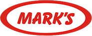

02 / 03
Uppruni
Allt kjöt sem Kjötmarkaðurinn selur er fyrsta flokks. Það kemur frá tveimur afurðastöðvum á Norðurlandi vestra og fer þaðan beint til kaupenda.

Norðurland vestra
Sýnimynd
65°45′ N, 19°39′ V
Sauðárkrókur
Kjötafurðastöð KS
Lamba- og nautakjöt frá Kjötafurðastöð Kaupfélags Skagfirðinga.
65°24′ N, 20°57′ V
Hvammstangi
Sláturhús KVH
Lamba- og nautakjöt frá Sláturhúsi KVH á Hvammstanga.
Leiðin
- 01AfurðastöðvarnarKS Sauðárkróki og KVH Hvammstanga
- 02Smiðjuvegur 46Lagerinn í Kópavogi, gul gata
- 03Til þínKeyrt hvert á land sem er
Samstarfsaðilar
